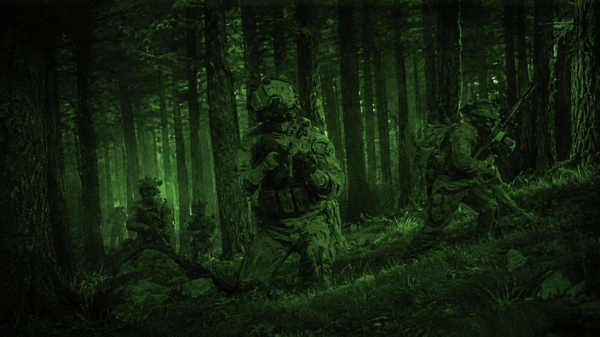

ENGAGE
Прилад опускається. Простір стає інтерфейсом.

A visual field study
FIELD SYSTEM 01 — серія візуальних сцен про рух, орієнтацію й напругу в темряві. Не каталог спорядження. Один цілісний світ.
OPTICS / ACTIVE
02 / Observe
Перша сцена починається там, де закінчується hero. Зелений сигнал, шум матриці та ліс, у якому деталі проявляються повільно.
NOISE / SIGNAL / ORIENTATION
The system
Прилад опускається. Простір стає інтерфейсом.
Шум не заважає — він підтверджує, що сигнал живий.
Рух крізь межу, де холодне світло розсипається на фрагменти.
Тиша після руху. Точка, з якої все видно ясніше.

Скло тут — не декорація, а момент переходу. Різкий контраст, темний метал, лід у відблисках і жодного зайвого кольору.
FIELD SYSTEM 01